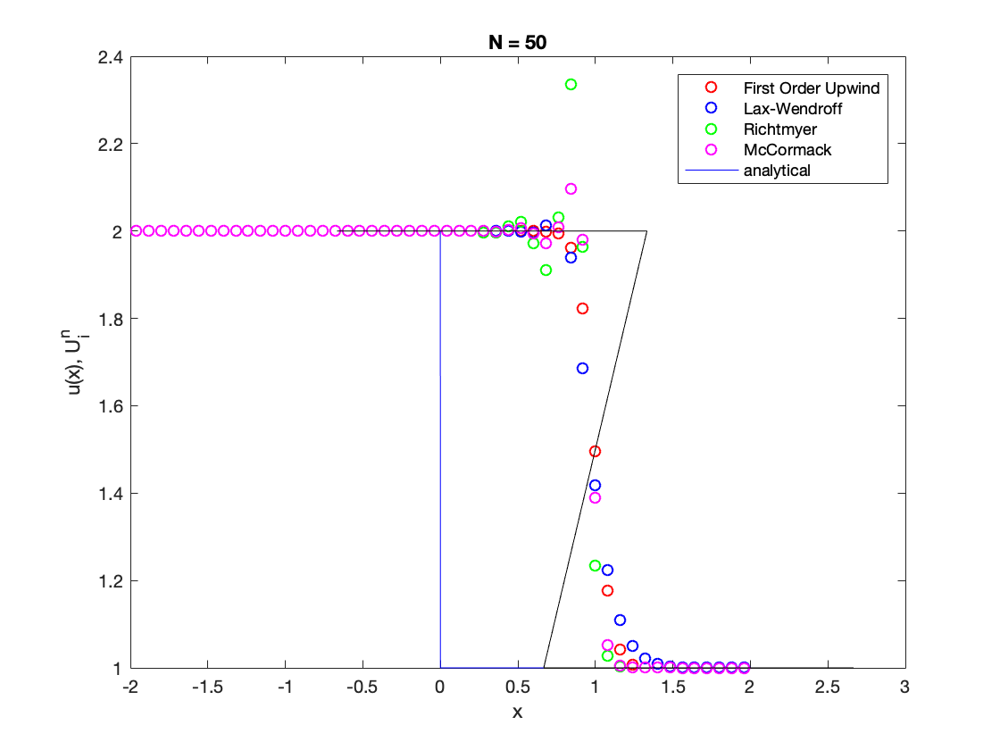
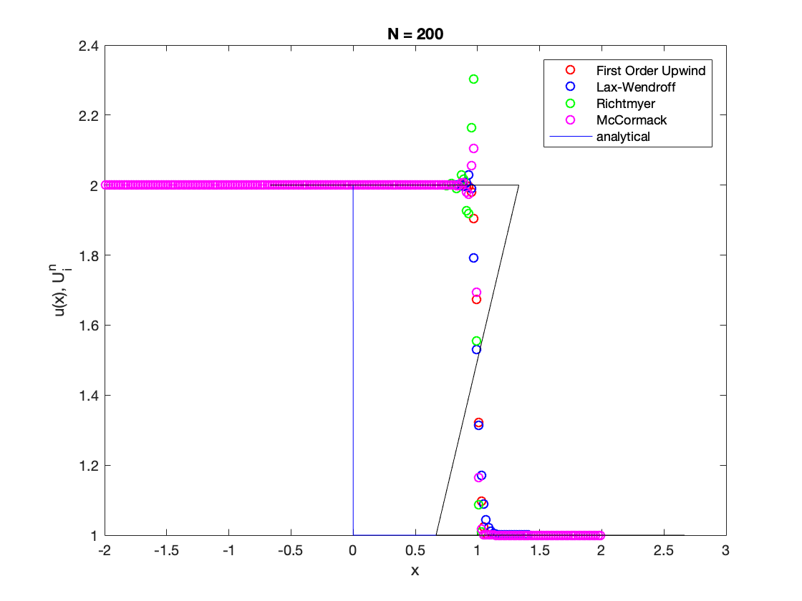
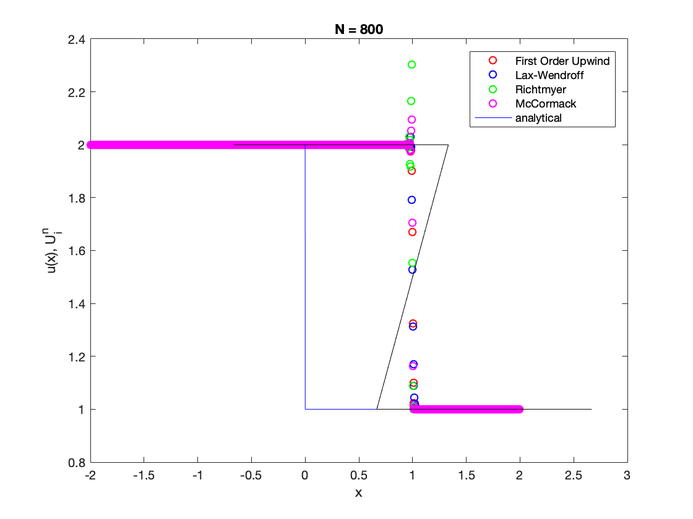

clear all; close all; clc
uh=@step; uL=2; uR=1; L=2; N=50; T=2/3; name='step';
method = {'first-order-upwind' 'lax-wendroff' 'richtmyer' 'maccormack'};
line = {'ro','bo','go','mo'};
N = [50 200 800];
fh=@burgers;
sigma=0.75;
for i = 1:3
figure
for j = 1:4
[xm,U]=advanceconservative(uh,fh,uL,uR,L,sigma,N(i),T,method{j});
x_=linspace(-L,L,10000);
[xi,ui]=burgersanalytical(x_,uh,T);
plot(xm,U,line{j});
hold on
end
plot(xi, feval(uh,xi),'b-')
hold on
plot(xi, ui, 'k-')
hold off
title(sprintf('N = %d',N(i)));
xlabel('x'); ylabel('u(x), U^n_i');
legend('First Order Upwind','Lax-Wendroff','Richtmyer','McCormack','analytical');
end
  